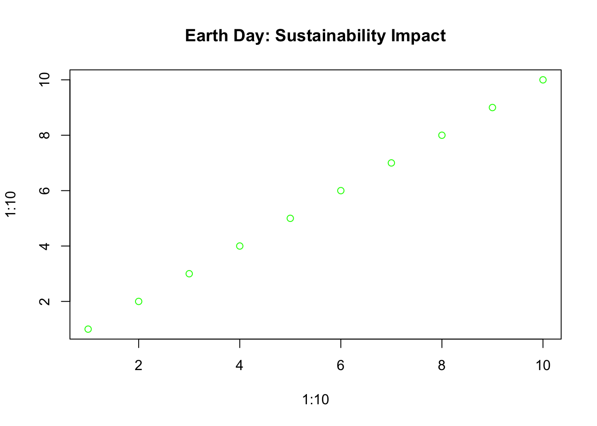

2024 Year in Review
2024 Year in Review
Welcome to the journey through 2024! Scroll down to relive the highlights month by month.
 An exciting year filled with innovation, creativity, and resilience!
An exciting year filled with innovation, creativity, and resilience!
January: New Beginnings
New possibilities took shape as the year began.
Highlights: - Global AI summit sets the tone for tech innovation. - Record-breaking snowfall in North America sparks creativity in snow art. 
February: Love and Culture
Romance and cultural celebrations filled February!
Top Moments: - Virtual Valentine’s celebrations in the metaverse. - Lunar New Year festivities embraced technology like never before. 
March: Spring Blooms
Nature’s beauty came alive with breathtaking scenes of renewal.

- People flocked to botanical gardens worldwide.
- Innovations in sustainable gardening tools gained momentum.